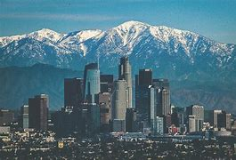
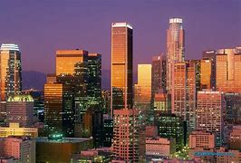
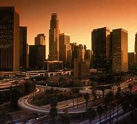
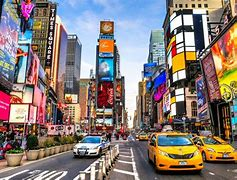

Los Angeles, officially the City of Los Angeles and often known by its initials L.A., is the most populous city in California; the second most populous city in the United States, after New York City; and the third most populous city in North America, after Mexico City and New York City. With an estimated population of nearly four million people, Los Angeles is the cultural, financial, and commercial center of Southern California. The city is known for its Mediterranean climate, ethnic diversity, Population:328.3 million Attractions:Statue of Liberty,Grand Canyon National Park,Space Needle President:Joe Biden
   